Chemical equilibrium are best represented by the free-energy minimization. In our implementation, the condition of equilibrium are state in term of the minimisation of the Gibbs free energy.
In the problem of solving equilibrium in combustion process, we could consider an ideal gas and pure condensed phase. So, the equation of state for the mixture is
| 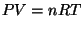 | (1) |
where 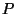 is the pressure (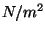), V specific volume (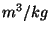), n moles, and T temperature (K).
The variable V and n refer to gases only while the mass is for the entire mixture including condensed species.
The molecular weight of the mixture is 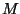 and is define as
| 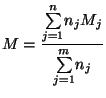 | (2) |
For a mixture of 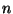 species, the Gibbs free energy is given by
| 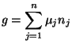 | (3) |
and the chemical potential may be written
| 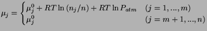 | (4) |
where 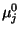 is the chemical potential in the standard state. It is habitually defined as
| 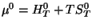 | (5) |
The equilibrium condition is the minimisation of free energy and is subject to the mass balance constraint:
| 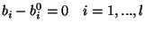 | (6) |
where 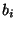 is the number of moles of one atom in the mixture and 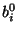 is the number of moles of the same atom of total reactants.
| 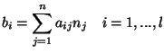 | (7) |
We could now define a term 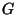
| 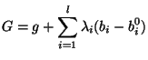 | (8) |
where 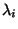 are Lagrangian multipliers. Taking the first derivative, we get
| 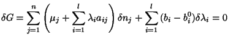 | (9) |
The variations 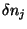 and 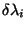 are independant and we get two conditions for equilibrium
| 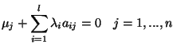 | (10) |
| 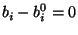 | (11) |